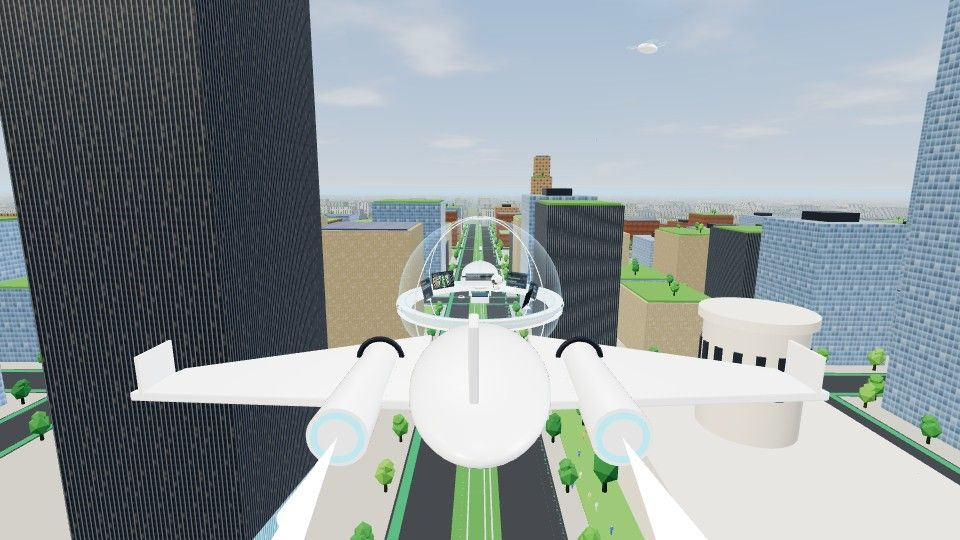
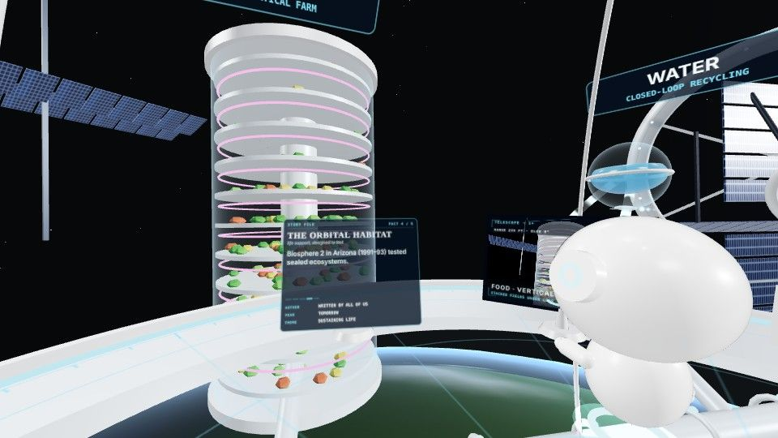

Fly from Columbus to orbit with ARCHIVE
A 90-second skyship flight down the Scioto and along Broad Street in an imagined Columbus 2050, up through the clouds, and into an orbital habitat where food, water, energy and air are made and recycled.
Columbus 2050 is an artistic future scenario, not an official plan. Works in desktop and phone browsers and in WebXR headsets.


Time · Place · Purpose
Choose when you want to go, where you want to be and what you want to do there. Every world is marked by its theme: sustainability, technology or space.
Worlds
Each world opens on its own. Skyship worlds offer three ways in: a guided flight, free exploration, and a learning mode with questions.
Loading worlds…
Skyship journeys
One skyship and one guide carry you between worlds. Pick a journey, or switch journeys from the menu inside the ship.